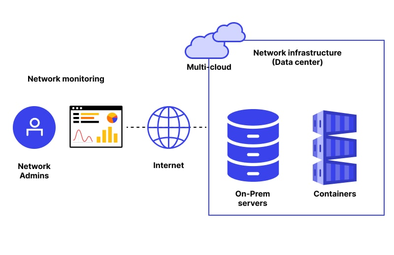
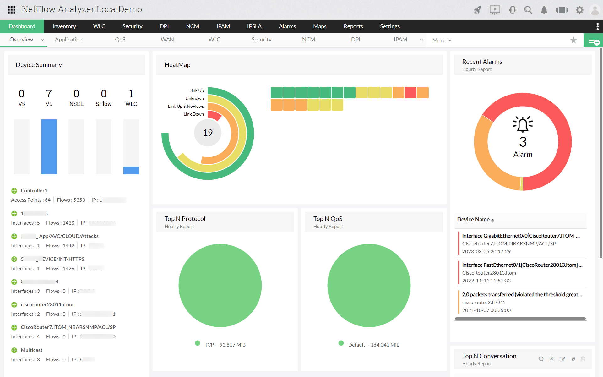
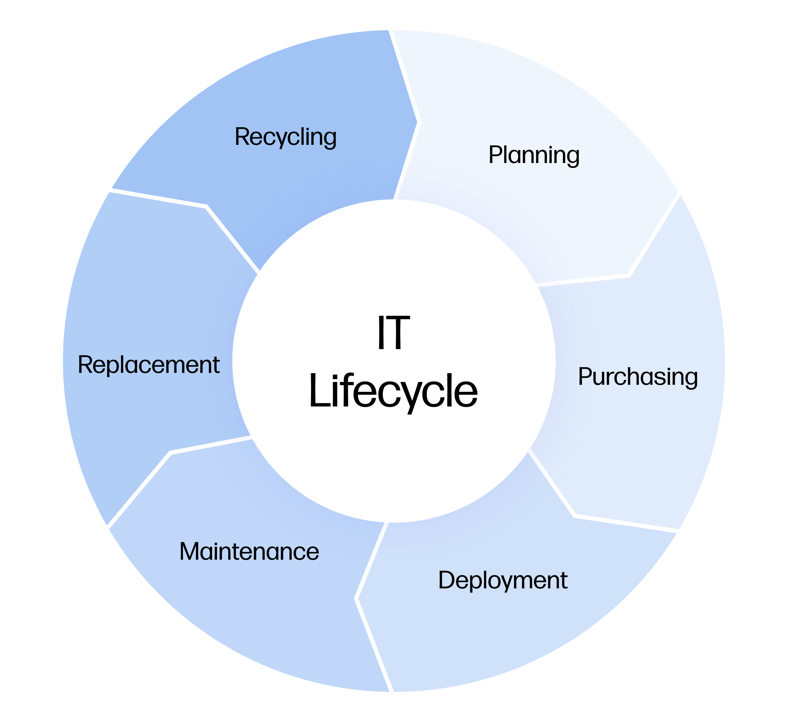

Gain real-time visibility into network performance, traffic patterns, and infrastructure health.
Mindarray system has been innovating in networking and data analytics technologies. Today, we are positioned as a solution provider that is enabling enterprises and government sectors to streamline their IT operations using innovative modules like:
IIP for network management — device health and topology visibility.
DAP for log management and flow analytics across your environment.
IT service automation — incident, problem, and change workflows.
All offerings of Mindarray system come under the brand name of Motadata, which includes IT Infrastructure Monitoring, Log & Flow Management, and IT Service Management Platform. These are designed to provide operational insights into an IT infrastructure and identify & resolve complex problems to maximize the overall uptime of the services.
Some of the benefits of our offerings are as follows:
In summary, Motadata is the perfect solution needed to confidently handle the challenges of today’s increasingly complex business operations and IT infrastructure management.
Ready to Learn More?Explore how modern IT management solutions can help improve visibility, efficiency, and operational reliability across your organization.
Get In TouchA Network Monitoring System (NMS) is an essential tool that enables organizations to monitor the health, performance, and availability of their IT infrastructure in real time. It helps IT teams identify issues before they impact business operations, ensuring maximum uptime and service reliability.
Monitor network devices, servers, and applications from a centralized dashboard with real-time visibility into system performance and availability.
Receive automated notifications and identify issues before they impact users, helping reduce downtime and improve service reliability.
Gain valuable insights through performance analytics, historical data, and customizable reports for better decision-making.

Enterprise Networks Monitor routers, switches, firewalls, and servers from a centralized platform.
Data Centers Ensure critical infrastructure remains available and performs optimally.
Cloud Environments Track the performance and availability of cloud-hosted applications and services.
Government & Education Maintain reliable digital services while improving operational efficiency.
Ready to Learn More?Explore how modern IT management solutions can help improve visibility, efficiency, and operational reliability across your organization.
Get In TouchLog Management is the process of collecting, storing, analyzing, and monitoring logs generated by applications, servers, network devices, and security systems. It helps organizations troubleshoot issues, improve visibility, strengthen security, and meet compliance requirements.
Collect logs from multiple sources across your IT infrastructure and manage them through a single platform for improved visibility and control.
Quickly search and analyze historical logs to identify root causes, investigate incidents, and troubleshoot operational issues.

Generate reports, monitor trends, and maintain audit trails to support regulatory compliance and informed decision-making.
Organizations generate large volumes of log data every day. Without proper log management, finding and diagnosing issues can be time-consuming and difficult. A centralized log management solution enables faster incident response, better operational insights, and improved governance of IT systems.
Ready to Learn More?Explore how modern IT management solutions can help improve visibility, efficiency, and operational reliability across your organization.
Get In TouchNetwork Traffic Monitoring provides visibility into how data moves across a network. It helps organizations monitor bandwidth usage, identify traffic patterns, detect anomalies, and ensure optimal network performance for users and business applications.
Gain a clear view of network activity, including bandwidth consumption, data flows, and communication patterns across devices and applications.
Monitor network utilization and identify congestion, bottlenecks, and performance issues before they impact users and critical services.
Analyze traffic trends, application usage, and network behavior to support optimization, troubleshooting, and capacity planning.

As organizations rely on digital services and cloud applications, network traffic continues to grow in complexity. Network Traffic Monitoring helps IT teams understand how network resources are being used, identify performance bottlenecks, and maintain a reliable, efficient, and secure network environment.
Ready to Learn More?Explore how modern IT management solutions can help improve visibility, efficiency, and operational reliability across your organization.
Get In TouchServiceOps helps organizations streamline and manage IT services through structured workflows, automation, and service management practices. It enables IT teams to efficiently handle requests, incidents, changes, and service delivery while improving operational efficiency and user satisfaction.
Manage service requests through a centralized platform, ensuring efficient handling, tracking, and fulfillment of user needs.
Automate repetitive tasks, approval processes, and ticket routing to improve productivity and reduce manual effort.
Track incidents, manage changes, and maintain service continuity with standardized processes and clear accountability.
As organizations become increasingly dependent on technology, efficient service management is essential for maintaining business operations. ServiceOps helps IT teams deliver consistent, reliable, and high-quality services while reducing operational complexity and improving collaboration across departments.
Ready to Learn More?Explore how modern IT management solutions can help improve visibility, efficiency, and operational reliability across your organization.
Get In TouchIT Asset Management (ITAM) helps organizations track, manage, and optimize hardware, software, and other technology assets throughout their lifecycle. It provides visibility into asset inventory, usage, compliance, and costs, enabling better planning and governance.
Automatically discover and maintain a centralized inventory of hardware, software, and network assets across the organization.
Track assets from procurement and deployment through maintenance, upgrades, and retirement for improved control and planning.
Monitor software licenses, asset utilization, and compliance requirements while optimizing resource allocation and reducing unnecessary costs.

Organizations rely on a wide range of IT assets to support daily operations. Effective asset management ensures better visibility, reduces risk, controls costs, and helps maximize the value of technology investments throughout their lifecycle.
Ready to Learn More?Explore how modern IT management solutions can help improve visibility, efficiency, and operational reliability across your organization.
Get In TouchPatch Management is the process of identifying, testing, deploying, and monitoring software updates across systems and devices. It helps organizations maintain security, improve system stability, and reduce vulnerabilities by ensuring software remains up to date.
Deploy critical security patches and updates to protect systems from known vulnerabilities and emerging threats.
Streamline patch distribution with automated scheduling, deployment, and monitoring across endpoints and servers.
Track patch status, monitor compliance levels, and generate reports to support governance and audit requirements.
Software vulnerabilities can expose organizations to security risks, operational disruptions, and compliance issues. Effective patch management helps maintain a secure, stable, and up-to-date IT environment while reducing manual effort and improving overall system reliability.
Ready to Learn More?Explore how modern IT management solutions can help improve visibility, efficiency, and operational reliability across your organization.
Get In Touch